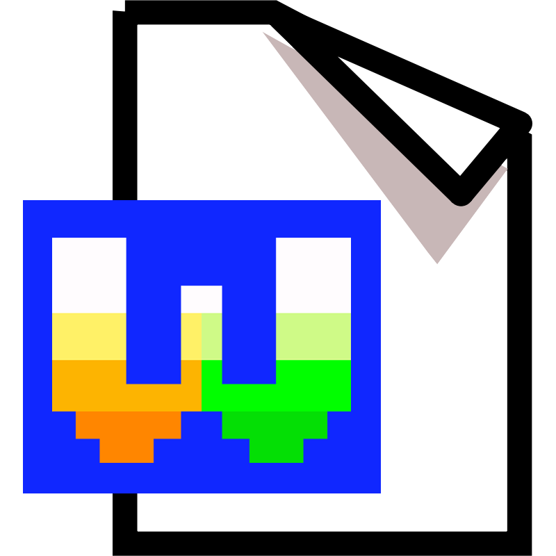

WarioWare, sometimes known as WarioWare, Inc., is a series of video games starring Wario and his friends. Unlike the Wario Land games, which are platformers like the main Mario series, WarioWare is a series of minigame compilations.
WarioWare, Inc. - Message
Welcome!
This is a website inspired by the Warioware franchise, this is not affiliated with Nintendo, rather it is just a fun project!